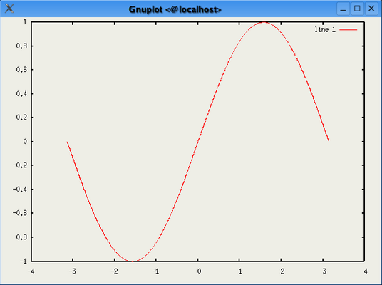

...making Linux just a little more fun!
This is the first of a series of articles in which I will introduce GNU Octave and demonstrate some of its many features. GNU Octave is a high-level language for numerical computations. I use it every day in my PhD research which involves manipulating large vectors and matrices. It is very similar in syntax and function to a commercial application called Matlab. The biggest difference between the two is that Octave is released under the GNU General Public License, which means it can be freely distributed and/or modified, while a single-user academic license for the basic Matlab currently costs US$700.
I have convinced a few of my colleagues to give Octave a try instead of Matlab. In every case, once that person stops looking for the differences between the two and decides to give Octave a real chance, they begin to embrace its usefulness, its features and its free availability. They realise that they can install a copy of Octave onto every one of their simulation servers, their laptops and their home computers without having to purchase costly new licenses for each one.
Starting the Octave interpreter under Linux is as simple as
typing the `octave' command:
$ octave GNU Octave, version 2.1.50 (i686-pc-linux-gnu). Copyright (C) 1996, 1997, 1998, 1999, 2000, 2001, 2002, 2003 John W. Eaton. This is free software; see the source code for copying conditions. There is ABSOLUTELY NO WARRANTY; not even for MERCHANTIBILITY or FITNESS FOR A PARTICULAR PURPOSE. For details, type `warranty'. Please contribute if you find this software useful. For more information, visit http://www.octave.org/help-wanted.html Report bugs to <bug-octave@bevo.che.wisc.edu>. octave:1>
info' command:$ info octaveinfo:octave' into Konqueror's location
bar.
In this article I only intend to touch on the very basics of Octave to demonstrate just how easy it is to pick up and use effectively. I would strongly recommend, at the very least, skimming through the available documentation to get a fuller flavor of what Octave has to offer.
x + 3y - 2z = -3
3x - 4y + 3z = 28
5x - 5y + 4z = 7
Such a system of linear equations can be written as the single
matrix equation Ax =
b, where A is the coefficient
matrix, b is the column vector
containing the right-hand side of the linear equations and
x is the column vector representing
the solution. If you've forgotten your linear algebra then don't
worry - this will all become at lot clearer as we use Octave to
solve this for us:
octave:1> A = [ 1, 3, -2; 3, -4, 3; 5, 5, -4 ]
A =
1 3 -2
3 -4 3
5 5 -4
octave:2> b = [ -3; 28; 7 ]
b =
-3
28
7
octave:3> A \ b
ans =
5.0000
2.0000
7.0000
octave:4>
You will notice that each line of the interpreter is numbered
sequentially; I will use these line numbers when referring to
particular commands. On line 1 I defined A as a
3x3 matrix containing the coefficients of the linear
system above (a coefficient is the number to the left of the
unknown variables x, y and
z). The rows are delimited with a semi-colon and the
individual elements on each row are delimited by a comma. Each of
these is recommended but optional: a space is all that is needed to
delimit elements in a row and the return key could have been used
instead of semi-colons. I defined the column vector
b on line 2 in the same way.
Line 3 computes the solution of the linear system using the
`left division' operator which, for the mathematicians among you,
is conceptually equivalent to
A-1b. By solution, I mean
that x = 5, y = 2 and z = 7
will satisfy all three equations of the linear system.
Plotting the solution to a problem in mathematics is often the
key to fully understanding that problem. Octave has a number of
functions for plotting two- and three-dimensional graphs which use
Gnuplot to handle the actual graphics themselves. As a simple
example, let's plot the sin( x ):
octave:9> x = [ -pi:0.01:pi ]; octave:10> plot( x, sin(x) ) octave:11>Which produces:

Let's examine line 9 above in more detail:
pi is one of many constants built in to Octave for
convenience and evaluates as 3.1415...begin:step:end such that [ 1:1:5 ] is the
vector [ 1 2 3 4 5 ]. The step is optional and if it
is omitted then a step size of 1 is assumed:
1:1:5 is the same as 1:5.[ -pi:0.01:pi ] creates a vector of
length 629 which we really don't want to print to the screen!a + b
|
Addition (Subtraction). If both operands are matrices then the number of rows and columns must both agree. If one operand is a scalar and the other is a matrix, then that scalar will be added (subtracted) to (from) every element of the matrix. |
a .+ b
|
Component-wise addition (subtraction) (also known as element-by-element addition). |
x * y
|
Multiplication. If both operands are matrices then
the number of columns of x must agree with the number
of rows or y. |
x .* y
|
Component-wise multiplication. |
x / y
|
Right division. Conceptually equivalent to (
(yT)-1 * xT
)T |
x ./ y
|
Component-wise right division |
x \ y
|
Left division. Conceptually equivalent to
x-1 * y |
x .\ y
|
Component-wise left division. |
x ^ y
|
Power operator. See the manual for definitions
when x and/or y is a matrix. |
x .** y
|
Component-wise power operation. |
-x
|
Negation |
x'
|
Complex conjugate transpose. |
x.'
|
Transpose. |
There are many standard functions built-in to Octave and these include the scalar functions:
sin()
|
asin()
|
log()
|
abs()
|
cos()
|
acos()
|
log2()
|
sqrt()
|
tan()
|
atan()
|
log10()
|
sign()
|
round()
|
floor()
|
ceil()
|
mod()
|
the vector functions:
max()
|
sum()
|
median()
|
any()
|
min()
|
prod()
|
mean()
|
all()
|
sort()
|
var()
|
std()
|
and the matrix functions:
eig()
|
- eigenvalues and eigenvectors |
inv()
|
- inverse |
poly()
|
- characteristic polynomial |
det()
|
- determinant |
size()
|
- return the size of a matrix |
norm(,p)
|
- compute the p-norm of a matrix |
rank()
|
- the rank of a matrix |
Strings can be declared with either single or double quotes:
> fname = "Barry"; Strings can be concatenated
using the same notation as matrix definitions:
> sname = "O'Donovan";
> [ fname, " ", sname ]
ans = Barry O'Donovan
There are many string functions available as standard, including
functions for converting strings to numbers and vice-versa. There
are also a number of functions for printing strings to the screen
such as disp() and printf(), and for
reading data from the user such as input().
A = ..., the variable A is created or
overwritten with the information on the right-hand side of the
assignment operator (=). Variable names are case
sensitive and made up of letters, digits and underscores but must
begin with a letter or underscore. Variables remain in the
interpreter's environment until you either exit the interpreter or
clear the variable:> clear AA, while:> clearwho command can be used to list all variables
currently stored in the environment.
We would often like to save the current environment to disk as a
backup or to come back to it later and continue on from where we
left off. We can use the following two commands for this:
> save filename
to save all of the currently defined variables to filename
and:
> load filename
to load them again at a later point.
octave:11> fib = [ 0, 1 ]; octave:12> for i = 3:10 > fib = [ fib, fib( i-2 ) + fib( i-1 ) ]; > endfor octave:13> fib fib = 0 1 1 2 3 5 8 13 21 34 octave:14>Fibonacci's sequence is described by
Fk =
Fk-1 + Fk-2 with F0 =
0 and F1 = 1. It is often used to
describe the population growth of rabbits: suppose that a newly
born pair of rabbits produce no offspring in the first month of
their lives and one new pair on each subsequent month. Starting
with F1 = 1 pairs in the first month,
Fk is the number of pairs in the
kth month assuming that none of the rabbits die.
Fibonacci's sequence occurs naturally in a variety of places and it
is one of those rare occurrences in mathematics where a simple
formula can be truly fascinating.
Notice that in the above code:
fib using itself and one
new value; andThe following example evaluates the randomness of Octave's
rand() function and demonstrates it's conditional
statements:
octave:14> a = b = c = d = 0; octave:15> for i = 1:100000 > r = rand(1); > if ( r < 0.25 ) > a++; > elseif ( r < 0.5 ) > b++; > elseif ( r < 0.75 ) > c++; > else > d++; > endif > endfor octave:16> a,b,c,d a = 25115 b = 24870 c = 25045 d = 24970 octave:17>Line 14 sets the scalar variables
a, b,
c and d to zero. We then generate 100,000
random numbers between 0 and 1 and increase a by one
if it falls between 0 and 0.25, b if it falls between
0.25 and 0.5, and so forth. Once the loop completes, we would
expect the values of a, b, c
and d to be approximately 25,000 if
rand() generates truly random numbers, which, as can
be seen above, it does.
Matrix manipulation is at the heart of Octave and it includes all the operators you would expect for matrix arithmetic including addition, subtraction, multiplication (matrix and component-wise), division, transposition, etc. It also has a number of functions for generating common matrices including:
eye() - the identity matrix;ones() and zeros() - a matrix of all
ones or zeros;hankel() - the famous Hankel matrix; andhilb() and invhilb() - the Hilbert
and inverse Hilbert() matrix.The groups of specialised functions include:
Some of these are complete and some only contain a few functions. Each is added by various people when and as needed. Over the next couple of months we will look at creating new functions with Octave as well as writing new functions in C++. The Octave developers welcome new additions and hopefully by the end of this series you might be writing and contributing your own Octave functions.
Next month: Writing new Octave functions and writing Octave scripts that can be executed from the command line.
Barry O'Donovan graduated from the National University of Ireland, Galway
with a B.Sc. (Hons) in computer science and mathematics. He is currently
completing a Ph.D. in computer science with the Information Hiding Laboratory, University
College Dublin, Ireland in the area of audio watermarking.
Barry has been using Linux since 1997 and his current flavor of choice
is Fedora Core. He is a member of the Irish
Linux Users Group. Whenever he's not doing his Ph.D. he can usually be
found supporting his finances by doing some work for Open Hosting, in the pub with friends or running in the local
park.